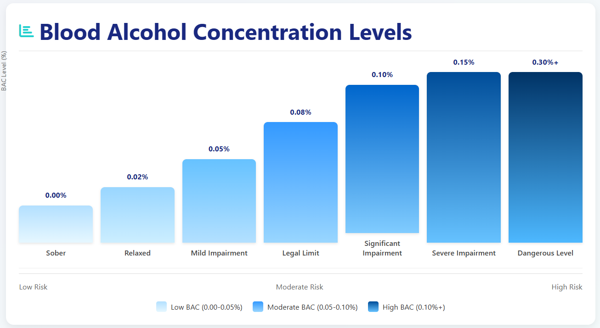
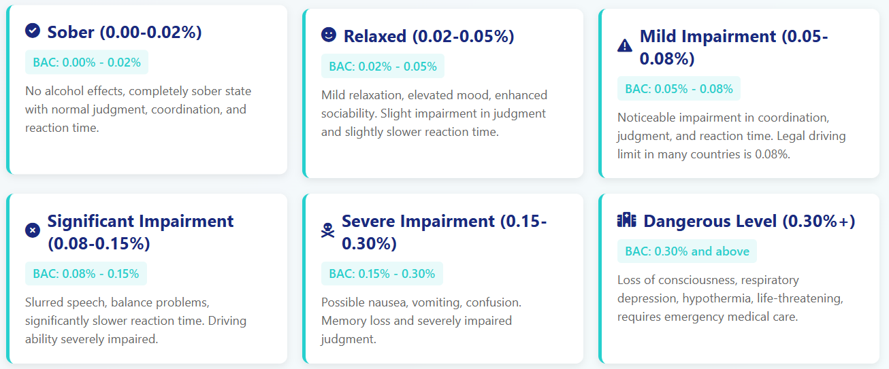

BAC Calculator
Drinks Consumed
Results
Enter your information and click "Calculate BAC" to see your estimated blood alcohol concentration.
Legal Limits
How to Use the BAC Calculator
Follow these simple steps to estimate your blood alcohol concentration (BAC) using our calculator. This tool helps you understand your impairment level after consuming alcohol.
Enter Your Information
Select your gender (male or female) and enter your weight. You can choose between pounds (lbs) or kilograms (kg) using the unit selector. These factors affect how your body metabolizes alcohol.
Add Time Elapsed
Enter how many hours have passed since you started drinking. Alcohol is metabolized at an average rate of 0.015% BAC per hour, so this significantly affects your current BAC level.
Add Your Drinks
Use the + and - buttons to add the number of drinks you've consumed. We provide three standard drink types (beer, wine, liquor) and a custom option for other beverages. For custom drinks, enter the volume and alcohol percentage.
Calculate Your BAC
Click the "Calculate BAC" button to see your estimated blood alcohol concentration. Your results will show your BAC level, what it means, and how long it will take for your BAC to return to zero.
Understand Your Results
Compare your BAC to legal driving limits and understand your impairment level. The calculator also shows when you'll likely be sober again based on average metabolism rates.
Make Safe Decisions
Use this information to make responsible decisions about driving or continuing to drink. Remember, this is an estimate only - when in doubt, don't drive. Always plan for a safe way home.
Blood Alcohol Concentration Levels Chart
Visual guide to understanding how different BAC levels affect your body and impairment level.


Blood Alcohol Concentration (BAC) levels and their corresponding effects on the human body.
Frequently Asked Questions
Blood Alcohol Concentration, abbreviated as BAC, refers to the measured alcohol content in human blood, typically expressed as a percentage (e.g., 0.08%). This indicates the number of milligrams of alcohol present per 100 milliliters of blood. It serves as the internationally recognized standard for assessing alcohol levels within the body, directly reflecting the extent of alcohol consumption by an individual. Consuming alcoholic beverages or foods containing alcohol can affect your Blood Alcohol Concentration level.
The blood alcohol concentration (BAC) calculator is a tool—typically an app, web-based tool, or software designed based on the principle of a universal formula for alcohol metabolism—used to estimate an individual's current blood alcohol concentration (BAC). Most people use it after consuming alcoholic beverages to determine when they can drive or when they will be sober. However, it's crucial to understand that a BAC calculator is not a medical diagnostic device. It provides a theoretical BAC estimate based on a widely accepted formula (a variant of the Widmark formula) and the personal parameters entered. This estimate has a significant margin of error and should only be used as a rough guide. It cannot serve as a completely reliable basis for driving decisions.
How It Works (Simple Version):
It uses a standard formula with three main steps:- Total Alcohol: It calculates the grams of pure alcohol you drank (using drink type, strength, and volume).
- Body Distribution: It divides that total by your body weight and a gender factor (men ≈ 0.68, women ≈ 0.55). This gives an estimated peak BAC. (This is based on the Widmark Formula).
- Time Factor: It subtracts alcohol your body has already metabolized (removed). The average metabolism rate used is 0.015% BAC per hour.
- Gender
- Body Weight
- Number and type of drinks
- Time spent drinking
- Your personal metabolism speed
- Food in your stomach
- Your body fat percentage or health
- How fast you drank
Basic Inputs You Provide:
Important Limitations:
It's an estimate only. Your actual BAC can be higher or lower. It cannot account for:Yes, our BAC calculator is designed based on the Widmark formula. It's a free online BAC calculator where you can input your gender, weight, alcohol content/type (percentage alcohol by volume), and time of consumption. Then click "Calculate BAC" and our BAC calculator will provide you with an estimated value. You can use this estimate to gauge how long it will take for your blood alcohol concentration to return to zero. Please remember this is for reference only.
Our BAC calculator provides scientific estimates based on widely accepted formulas and average metabolic rates. However, it is not entirely accurate. The blood alcohol concentration values it calculates are merely estimates, with potential errors reaching approximately 20%. Individuals metabolize alcohol at different rates, and alcohol consumption varies depending on food intake during drinking. Additionally, personal health conditions and other factors such as medications or physical conditions differ. Therefore, considering all these variables, it is clear that the BAC calculator's results are merely a general estimate based on standardized conditions and cannot serve as a reliable basis for determining a driver's fitness to operate a vehicle. Accurate measurement requires official breathalyzers or blood tests. Based on these conclusions, we advise that BAC calculators should only be used for personal understanding of approximate alcohol metabolism. They cannot replace professional alcohol testing and must never be the sole basis for deciding whether to drive.
Based on Google search results, we've compiled a list of the top ten best blood alcohol concentration calculators. These tools have been personally tested by us and are both easy to use and reliable. Here is the ranking of the top 10 most accurate BAC calculators:
- https://www.calculator.net/bac-calculator.html
- https://baclevelcalculator.com
- https://alcohol.org/bac-calculator/
- https://www.drinkfox.com/tools/bac-calculator
- https://prevention.dasa.ncsu.edu/aod/bac/
- https://www.intox.com/drink-wheel/
- https://drunkcalc.com/#step-one
- https://aod.wellbeing.wifi.edu/resources/blood-alcohol-calculator/
- https://www.scheuermanlaw.com/bac-calculator/
- https://alcohol.indianapolis.iu.edu/calculators/bac.html
In the United States, a standard drink contains approximately 14 grams of pure alcohol. This is equivalent to: - 12 ounces of regular beer (5% alcohol by volume) - 5 ounces of wine (12% alcohol by volume) - 1.5 ounces of distilled spirits (40% alcohol by volume) Our Bac Calculator incorporates these standard measurement units. Of course, to accommodate users in different countries and regions where measurement units may vary, our calculator also offers customizable measurement unit settings.
The average rate at which alcohol is metabolized in the human body is 0.015% blood alcohol concentration (BAC) per hour. In other words, it takes approximately one hour to fully metabolize one standard drink. This metabolic rate should be understood as a general average. Actual rates vary among individuals—some metabolize faster, others slower—so this figure serves only as a reference and may be inaccurate. However, the liver typically metabolizes alcohol at a constant rate—neither coffee, cold showers, nor exercise will accelerate this process.
In the United States, the legal limit for driving is 0.08% BAC in all 50 states. Commercial drivers have a limit of 0.04%, and drivers under 21 have a "zero tolerance" limit (typically 0.00-0.02% depending on the state). Many other countries have limits of 0.05% or lower.
No. Our alcohol BAC calculator is for informational and educational purposes only. When driving, the safe standard for blood alcohol concentration (BAC) is 0.00%. Many factors can affect the actual impairment of your driving ability, and even a BAC below 0.08% may impair driving ability. Therefore, when you plan to drive, please exercise caution and never drive under the influence. For your safety and the safety of others, it is recommended to designate a non-drinking driver or choose alternative transportation.
Women typically have a higher percentage of body fat and lower percentage of body water than men of the same weight. Since alcohol is distributed in body water, women generally reach higher BAC levels than men after consuming the same amount of alcohol. Hormonal factors and enzyme differences also play a role.
About BAC Calculation
Blood Alcohol Concentration (BAC) is calculated using the Widmark formula, which considers your weight, gender, number of drinks, and time elapsed.
This calculator uses standard drink sizes (14g pure alcohol per drink) and accounts for alcohol metabolism (approximately 0.015% per hour).
Remember: This is an estimate only. Actual BAC can vary based on metabolism, food intake, medication, and other factors.
Effects of Alcohol
- Level1. 0.02-0.03%: Slight mood elevation, some loss of judgment
- Level2. 0.04-0.06%: Feeling of relaxation, lowered inhibition
- Level3. 0.07-0.09%: Impaired balance, speech, vision, reaction time
- Level4. 0.10-0.12%: Significant impairment of motor coordination
- Level5. 0.13-0.15%: Gross motor impairment, blurred vision
- Level5. 0.16-0.20%: Dysphoria, nausea, possible blackouts
- Level6. 0.25%+: Severe intoxication, risk of alcohol poisoning
Safe Driving Tips
- The only safe driving limit is 0.00% BAC
- Plan ahead: designate a sober driver or use ride-sharing
- Allow at least one hour per standard drink before driving
- Eating food can slow absorption but won't prevent impairment
- Coffee, cold showers, or exercise do NOT sober you up
- Many DUI arrests occur the morning after drinking
Important Disclaimer
This blood alcohol calculator provides estimates only. Individual metabolism, food consumption, medication, and other factors can significantly affect actual BAC. Do not drive after drinking alcohol. This tool is for educational purposes and should not be used to determine if you are safe to drive. Always err on the side of caution and use a designated driver or alternative transportation.